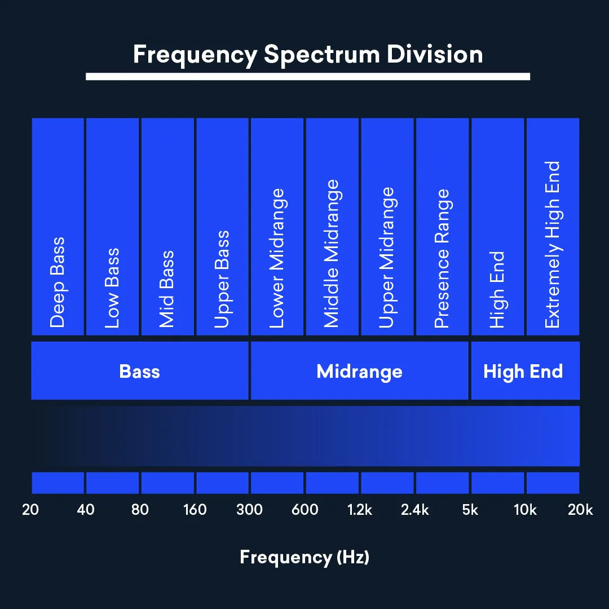

Guide to Audio Processing
This is a guide to audio processing effects. We will look at their classification and describe some of them.
Audio processing effects based on soundwave characteristics they affect as follows:
- Dynamics - signal loudness
- Spectral processing - emphasized frequencies
- Distortion & saturation - harmonics and non-linear frequencies
- Delay & time effects - copies of signal
- Reverb
- Modulation
- Pitch
- Spatial processing
- Noise reduction
- Phase & polarity
Izotope's guide to audio effects.
image example


This is a link to descriptions of some audio effects.